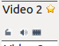
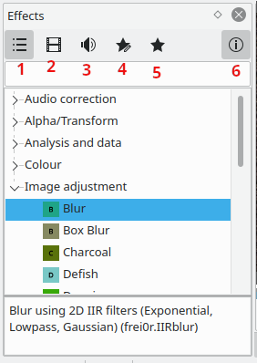
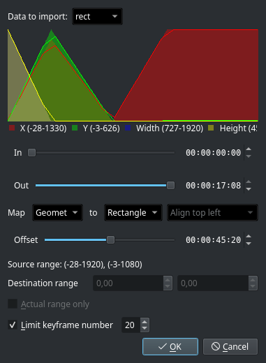
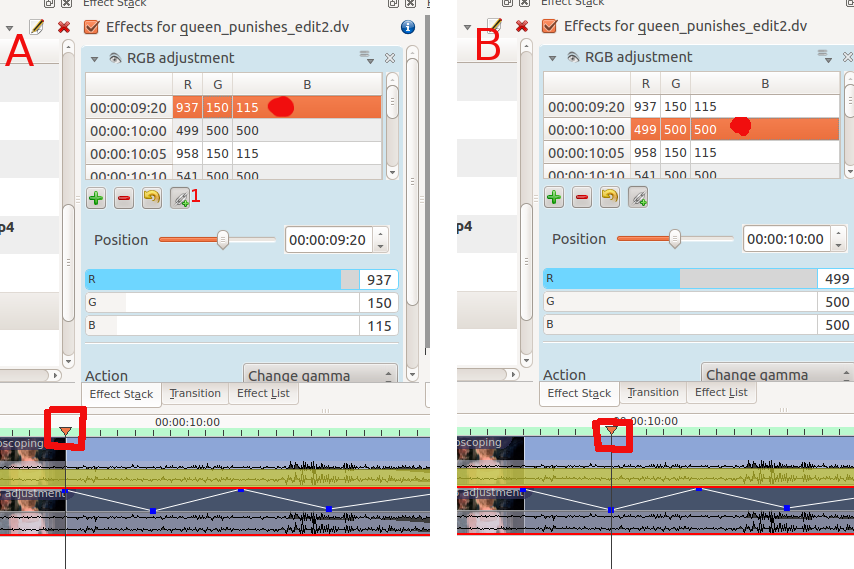

Effects¶
Contents
Effects in Kdenlive can be used to modify the audio and video properties of the source material.
You add effects to clips by choosing them from the Effects Tab and dragging them onto a clip in the timeline. Or by selecting a clip in the timeline and choosing from the timeline_menu or from Clip in Timeline Clip in Timeline - Right-Click Menu menu . For more detail see Quick Start
The effects that are in play on a given clip can be viewed and edited via the Properties Tab that displays when the clip in question is selected in the timeline.
You can also apply effects to an entire track. This is achieved by dragging an effect from the Effect Tab to the Track Header. Or you can click on the track header and chose from the timeline_menu. Tracks which have effects added in this fashion will have a gold star icon in the track header.
{kind=link}
Effects Tab¶
Make the Effects Tab visible from the menu ()
{kind=link}
The effects tab has 5 different icons that cause the application to show and hide different categories of effects.
By default the effects tab displays the “Main Effects” (Icon 1 selected). These are the Audio Correction, Alpha/Transform, Analysis and data, Colour and the Image adjustment categories.
Icon 2 makes it display all the video effects categories (This option hides the Audio Correction category that is in the “Main Effects” and adds the Misc and Motion categories).
Icon 3 makes it display all the Audio effects categories
Icon 4 is Custom effects
Icon 5 is Favorite Effects. This is the same list that appears in the “Insert an Effect …” context sensitive menu obtained on a clip in the timeline. An effect gets in this list by choosing Add to Favorites from the context sensitive menu on each of the effects.
Icon 6 toggles the information display which - when on - shows a description of what the effect does.
If you find that you are missing some effects or effects categories that you know and love it is probably because you need to choose to display the hidden effects by choosing an Icon other that Icon 1 - “Main Effects”
To add an effect to a clip, simply drag it from the Effects Tab to the clip on the timeline.
{kind=link}
{kind=link}
Keyframes in effects¶
Many effects use the concept of “Keyframes”. Keyframes are user-defined points in your clip where you want an effect to start, stop or change. You can set the parameters for your effects to different values at different keyframes and Kdenlive will then gradually change the parameters between the two keyframes so that by the time the video has arrived at the next keyframe it will have adjusted the parameter to match that key frame. It interpolates between keyframes.
See Quick Start for an example on keyframing the RGB adjustment effect.
New in version 20.08.0.
Effect panels get zoom bars. Adjusting keyframes just get easier.
VIDEO FILE Zoombar-effects.mp4 MISSING
Working with keyframes in the effect stack¶
New in version 21.04.0.
The effect’s keyframe panel has new icons, improved keyframe grabbing and new functions like:
VIDEO FILE move-kf-to-cursor.mp4 MISSING
# Select the keyframe you want to move # Move the cursor to the position where you want to move the keyframe to
Click on
VIDEO FILE duplicate-keyframe.mp4 MISSING
# Select the keyframe you want to duplicate # Move the cursor to the position where you want to insert the new keyframe
Click on
VIDEO FILE apply-value-to-selected-kf.mp4 MISSING
# Select all keyframes you want to apply the value on # Go to one of the selected keyframes and change the value(s) as you want # Click on
Select the parameters you want to apply and click on
VIDEO FILE kf-ctrl-select.mp4 MISSING
VIDEO FILE kf-rubber-select.mp4 MISSING
VIDEO FILE multiple-kf-move.mp4 MISSING
Exchange keyframes across effects¶
You can import and export keyframes from/to the clipboard. This feature is not only useful to copy keyframes from one clip to another, it can e.g. also be used to copy the results of the motion tracker to a transform effect.
To export the keyframes the clipboard click on inside the keyframe widget and choose
{kind=link}
To import keyframes from the clipboard click on inside the keyframe widget and choose . If you have valid data on your clipboard you should see a dialog similar to the screenshot where you can adjust the mapping of the data.
Effect Zones¶
New in version 21.04.0.
The new Effect Zones allow you to apply effects to specific regions of tracks or the timeline. Zones can be set from the effect zone bar in the timeline or from the interface in the effect panel.
Track Effect Zone
VIDEO FILE track-effect-zone.mp4 MISSING
Master Effect Zone
VIDEO FILE timeline-effect-zone.mp4 MISSING
Seek To Active Frame¶
Some keyframe controls have a seek to active frame button
(labeled 1 in screenshot A below). When seek to active frame is toggled on and you click on one of the keyframes in the keyframe list, Kdenlive will scroll the preview window to that keyframe. In the example of the screenshot, we have selected the keyframe at 9:20 in A and the clip position caret (highlighted in red box) shows the location of this keyframe. Clicking the keyframe at 10:00 in B shows how the clip position has moved.
Effects Demos¶
The following three YouTube videos display the results of a number of the video effects available in Kdenlive (Spanish captioning).
Another YouTube video (English Captions).
See also this YouTube play list from Franz M.P.
Effects Categories¶
See also Alphabetical List of Effects and Compositions for an alphabetical list of effects and transitions.
The effects are divided into the following categories:
artistic
The available effects are defined by .xml files found in $KDEDIR/share/kde4/apps/kdenlive/effects (e.g. /usr/share/kde4/apps/kdenlive/effects).
Or at /usr/share/kdenlive/effects on version 15.n.
These .xml files contain the default values for the effects parameters. So if you don’t like the default values for the effects in Kdenlive, you can modify the defaults by editing these .xml files.
FAQ¶
Q: How to duplicate an effect to use similar settings somewhere else?
A: Select your effect in the timeline. In the Properties Tab choose (from the Effects). You will now find this effect available in the Effect List section.
A: Other solution: select a strip containing the effect, , then, where you want to apply it again, right-click and select instead of .
Q: How to apply an effect on several clips (all) at the same time?
A: You can select multiple clips with Shift + drag (left mouse button) around them. Then right-click and group clips (or Ctrl + G).